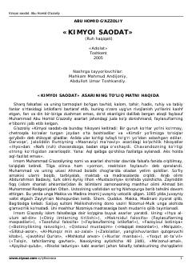

KSAbu Homid G'azzoliyning mashhur tasavvufiy-falsafiy asari.
Abu Homid G'azzoliyning ushbu asari islom falsafasi, tavhid, kalom va tasavvuf masalalariga bag'ishlangan bo'lib, sharq xalqlarining boy madaniy merosini o'rganishda muhim manbadir. Kitobda fan va dinning uyg'unligi, ruh va nafs haqiqatlari hamda axloqiy poklanish yo'llari ilmiy-falsafiy asosda yoritib berilgan.